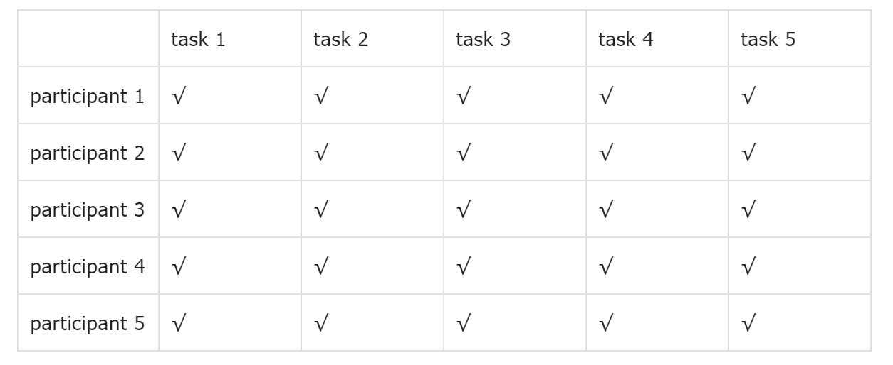

Based on the test result before, several changes have been made during the process of transforming from low-fidelity to high-fidelity. Like i reduced the size of card for each dance studio. As last time, participants point out it would be better if they could see more dance studios' overviews on the screen so they can make comparisons more easily.
This time, still, three sides are focused: dance studio information side(function), community side(function), VIP(monetization)
Five tasks are tested:
dance studio information side
1. Find a dance studio which fits you, collect it and find it in your collection
2. make evaluation of a dance studio you have been before
community side:
3. have questions and wanna hear others’ advice, publish posts to solve it
4. view the post regarding finding k-pop dance teacher or friends to learn or dance together
VIP:
5. acquire information regarding VIP, register for paid VIP
Four post-test questions were also designed to obtain recommendations for improvement:
1. Please rate the overall process: 5 as very satisfied, 1 as very dissatisfied
2. What difficulties did you encounter in the process?
3. How do you think the page can be improved?
4. Any possibilities you are willing to pay for it?

Luckily, all the participants fulfilled the task. However, most of them took more time in completing task 3&4, which are all related to community. I assume it's because i made some changes. In figma prototype, i made a dropdown menu of community in the navigation, so users can see the sections in community while hovering even in the homepage. However, i deleted it because I fail to make the "scroll to" effect, when click the three section, user will still be directed to the same place within page. I'm afraid it would bepuzzling. Thus i changed the vertical layout of the three sections into tab and deleted the menu But, it seemed that add the dropdown menu back and combined with this tab would be better. Also the function intruduction in the index page should be more clear.
A/B test
The index of my website gives an overview of all the functions of this website. I want to know if the description and presentation of the functions are attractive enough for users to convert to VIP. So the variable is a “convert button” placed on the index page under the function overview of dance studio information. The button with a description “成为会员查看更多” can direct user to the VIP registration page.
The original version: on the homepage, the button is placed under the function overview of dance studio information. For the variant 1 version, the button is deleted. I want to see if the number of register VIP users would be different under the 2 situation.
Due to the limit participants, current result may not be representative, shall post it into some dance wechat group and follow up.